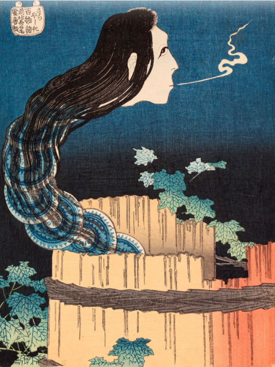
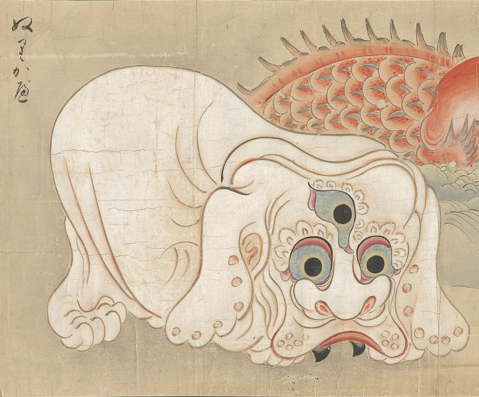
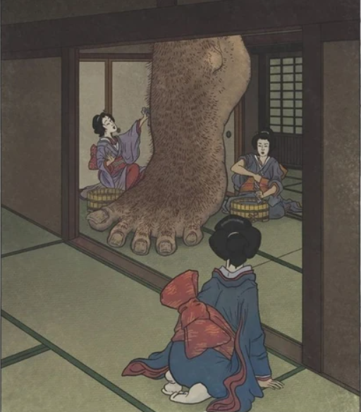
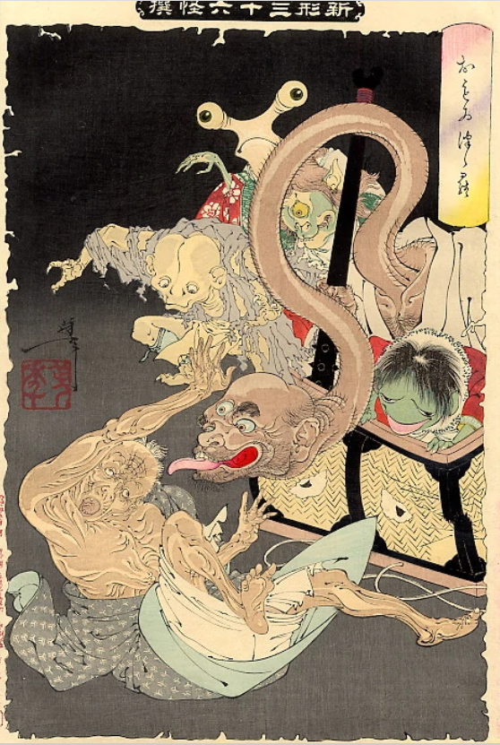
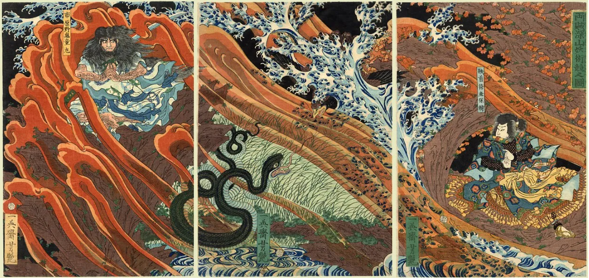
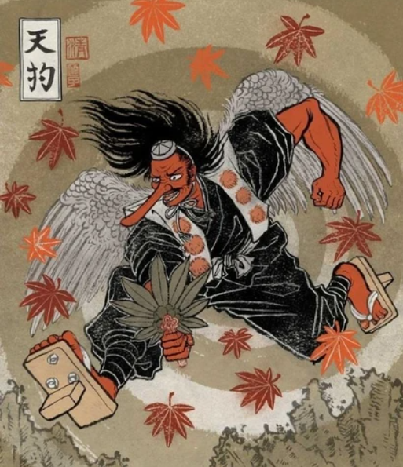

HISTOIRE
TECHNIQUE
SHIN-HANGA
YOKAIS
HISTOIRE
TECHNIQUE
SHIN-HANGA
YOKAIS
Les yōkai (妖怪?, « esprit », « fantôme », « démon », « apparition étrange ») sont un type de créatures surnaturelles dans le folklore japonais. Il est souvent représenté comme un esprit malfaisant ou simplement malicieux démontrant les tracas quotidiens ou inhabituels.
Les yōkai ont un comportement qui varie de l'espièglerie à la malveillance et, occasionnellement, ils portent chance ou malchance à ceux qu'ils rencontrent. Ils possèdent souvent des attributs d'animaux, comme le kappa, qui ressemble à une tortue, ou le tengu, qui a des ailes. D'autres fois, ils peuvent avoir des traits plus humains ; quelques-uns ressemblent à des objets inanimés et d'autres n'ont pas de formes perceptibles. Les yōkai ont ordinairement des pouvoirs spirituels surnaturels. La métamorphose est l'un des plus courants.
    